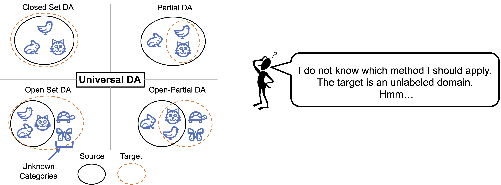
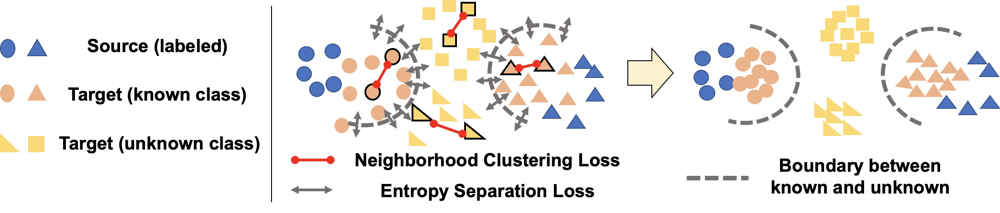
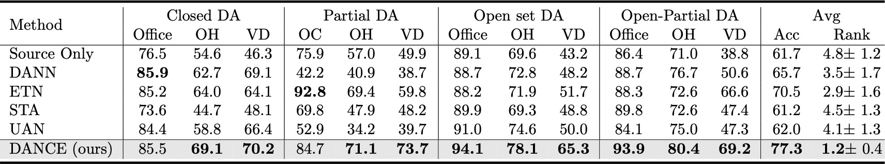
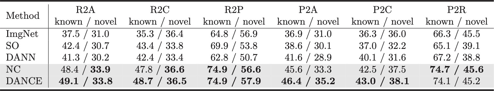

Universal Domain Adaptation through Self-Supervision (NeurIPS2020)
Kuniaki Saito1, Donghyun Kim2, Stan Sclaroff1, Kate Saenko1,2
1: Boston University, 2: MIT-IBM Watson AI Lab
[Paper] [Code]
Problem: Dataset Bias

Supervised machine learning relies on a training set with many labeled examples, and assumes that, at test time, new unlabelled examples that the trained model is asked to label will come from the same distribution as the training examples. However, in practice, this is not true — training datasets are almost always biased in some way and are not representative of all possible future input data that the system will see at test time. Such “dataset bias” results in reduced accuracy on the target domain. In this work we propose a domain adaptation method to reduce such domain bias using self-supervised learning on the unlabeled target domain data.
Universal Domain Adaptation: Towards Practical Domain Adaptation

In domain adaptation, we aim to transfer the source domain's knowledge to the target in a way that achieves high accuracy on the target. One of the difficulty in achieving practical domain adaptation is the potential category shift between source and target domains: the target domain may have classes that are absent in the source (open-set adaptation), or some source classes may be absent in the target (partial adaptation), or the classes may be the same (closed-set adaptation.) Various methods have been proposed to solve each setting, but what if we do not know the number of classes in the unlabeled target data? There is currently no adaptation method that works for any label shift. Besides, methods tailored for a specific setting can catastrophically fail in other settings. Therefore, to achieve a practical learning system, a method that works well on any arbitrary setting is necessary. We call this "Universal Domain Adaptation" .
Idea

Our proposed DANCE framework consists of two novel ideas — a self-supervised loss and weak distribution alignment (Figure 2.) The first idea is a new unsupervised clustering technique, Neighborhood Clustering Loss, which does not require knowledge of the number of classes in the target. As we mentioned, knowing the number of classes can be hard since the target domain is an unlabeled. However, if we perform clustering within the target domain, the model will learn to extract discriminative features. This technique is helpful in all sub-settings of Universal DA. The second idea is a weak alignment loss, Entropy Separation Loss, which can align known-class target samples to the source and also can reject unknown-class samples.
Experiments
Overview

DANCE shows the best or the second performance in these adaptation settings. DANCE is the only method that performs better than the source model in all cases.
Analysis by clustering perspective

We evaluate how well our proposed method is effective to cluster target samples for both classes shared with source (known) and classes absent in the source (novel). For both classes, our method improves the performance compared to ImageNet pre-trained model. On the other hand, other baselines (SO, DANN) harms performnace on novel classes.
Reference
@inproceedings{saito2020dance,
title={Universal Domain Adaptation through Self-Supervision},
author={Saito, Kuniaki and Kim, Donghyun and Sclaroff, Stan and Saenko, Kate},
journal={NeurIPS},
year={2020}
}